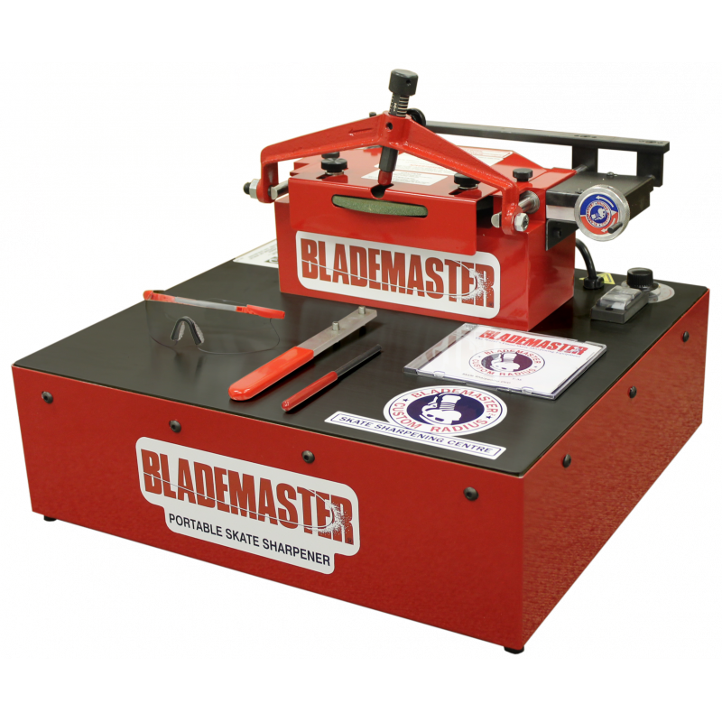

The grinding wheel of a sharpener can be set to different depths which provides different kinds of edges on a skate blade. The most commonly used depth is 1/2. In order from sharpest to dullest is 1/4, 3/8, 7/16, 1/2, 9/16, 5/8, 11/16, and 3/4. On average it takes anywhere from 8-13 minutes to sharpen a pair of skates. Sometimes it can be unclear if a skate is done being sharpened. If you are unable to tell it can be as simple as holding the blade up to a light source and comparing the pattern of the sharpening wheel all across the blade.
Example of good vs bad 